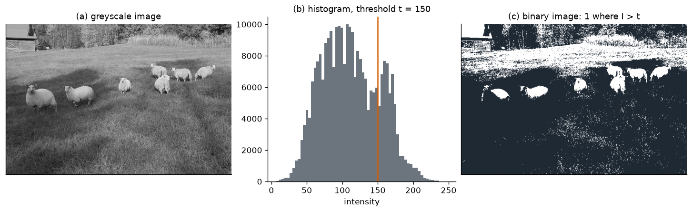
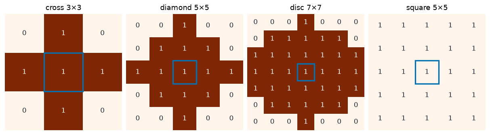
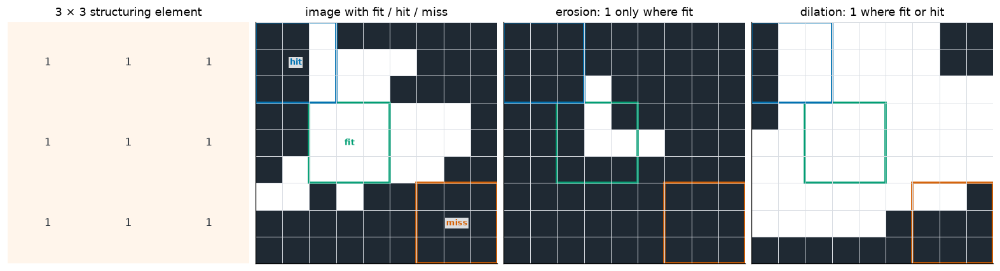
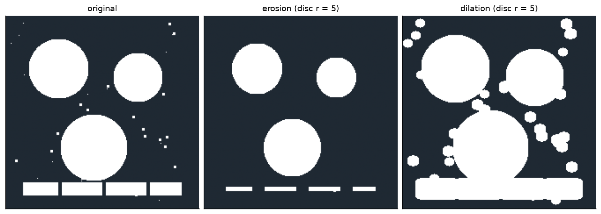
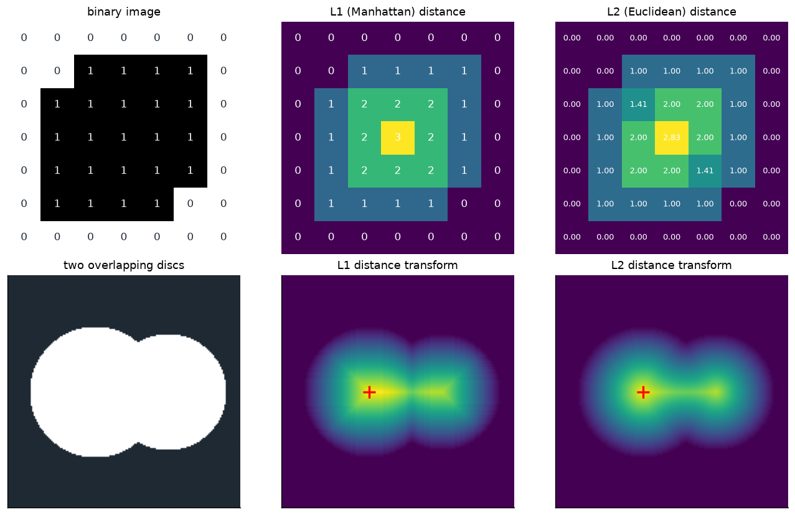
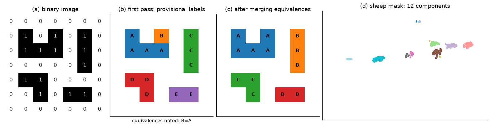
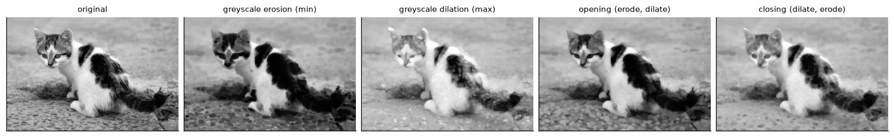

Lesson 01.05
Binary images and morphology
Binary images and structuring elements, the fit/hit/miss rules behind erosion and dilation, opening and closing, the distance transform, connected-component labelling, and the greyscale versions.
Learning outcomes
After this lesson you should be able to:
- create a binary image by thresholding and explain what a structuring element is;
- apply the fit / hit / miss rules to compute erosion and dilation by hand;
- explain what opening and closing do and why the two operations are paired;
- compute a distance transform with the L1 and L2 metrics;
- label the connected components of a binary image;
- describe greyscale morphology in terms of minimum and maximum.
Binary images
Besides RGB and greyscale images, binary images are common in image processing. A binary image has been quantised to two values. Textbooks write them as 0 and 1; OpenCV stores black as 0 and white as 255. Binary images are usually made from a greyscale image by a threshold operation: pixels above the threshold become 1 and the rest become 0. They are useful as masks that separate foreground objects from the background, a topic we return to in the segmentation lessons.


Morphology
Morphology is a family of image operations that process an image according to the shape of its regions. They are simple non-linear operations: the output pixel is not proportional to the input pixels, as will be obvious once we see the rules. Like a filter, a morphological operation is applied at every pixel of the image. The two primary operations are:
- Erosion, which removes pixels from the boundary of a region: a letter is thinned, a square shrinks and a hole inside it widens.
- Dilation, the opposite, which adds pixels to the boundary: the letter thickens, the square grows and its hole shrinks.
The structuring element
The operation is applied at each pixel over a neighbourhood defined by a small binary array called the structuring element (SE). The element may be a cross, a square or an approximate disc, and it comes in different sizes: the larger the element, the larger its effect on the boundary.

At any position, the degree of overlap between the 1s of the structuring element and the 1s of the image decides the outcome:
- a fit: every 1 of the element lies over a 1 of the image;
- a hit: some, but not all, of the element's 1s lie over image 1s;
- a miss: none of them do.
Erosion and dilation
The erosion rule: output 1 if the structuring element fits the image at that position, otherwise 0. Since only a fit produces a 1, erosion reduces the number of white pixels.
The dilation rule: output 1 if the element fits or hits, and 0 only for a miss. Fits and hits both produce 1s, so dilation extends object boundaries and is useful for filling holes and gaps.


Worked example 1: Morphological Erosion
The binary image $I$ below is processed by morphological erosion using the oval-shaped $3 \times 3$ structuring element $B$.
Input image $I$:
$$\begin{bmatrix} 0 & 0 & 0 & 1 & 0 & 0 & 0 & 0 & 0 \\ 0 & 0 & 1 & 1 & 0 & 0 & 0 & 0 & 0 \\ 0 & 0 & 0 & 1 & 1 & 1 & 1 & 0 & 0 \\ 1 & 1 & 1 & 1 & 1 & 1 & 1 & 0 & 0 \\ 0 & 1 & 1 & 1 & 1 & 1 & 0 & 0 & 0 \\ 0 & 0 & 1 & 1 & 1 & 1 & 1 & 0 & 0 \\ 0 & 0 & 1 & 1 & 0 & 1 & 1 & 0 & 0 \\ 0 & 0 & 0 & 0 & 0 & 0 & 0 & 0 & 0 \\ 0 & 0 & 0 & 0 & 0 & 0 & 0 & 0 & 0 \end{bmatrix}$$
Structuring element $B$:
$$\begin{bmatrix} 0 & 1 & 0 \\ 1 & 1 & 1 \\ 0 & 1 & 0 \end{bmatrix}$$
Compute the eroded image $I \ominus B$.
Show the solution
Erosion rule. The eroded image $I \ominus B$ is defined as:
$$[I \ominus B](r,c) = \begin{cases} 1 & \text{if } B \text{ centred at } (r,c) \subseteq \text{foreground of } I \\ 0 & \text{otherwise} \end{cases}$$
Pixels where $B$ extends beyond the image border count as background.
Result:
$$I \ominus B = \begin{bmatrix} 0 & 0 & 0 & 0 & 0 & 0 & 0 & 0 & 0 \\ 0 & 0 & 0 & 0 & 0 & 0 & 0 & 0 & 0 \\ 0 & 0 & 0 & 0 & 0 & 0 & 0 & 0 & 0 \\ 0 & 0 & 0 & 1 & 1 & 1 & 0 & 0 & 0 \\ 0 & 0 & 1 & 1 & 1 & 0 & 0 & 0 & 0 \\ 0 & 0 & 0 & 1 & 0 & 1 & 0 & 0 & 0 \\ 0 & 0 & 0 & 0 & 0 & 0 & 0 & 0 & 0 \\ 0 & 0 & 0 & 0 & 0 & 0 & 0 & 0 & 0 \\ 0 & 0 & 0 & 0 & 0 & 0 & 0 & 0 & 0 \end{bmatrix}$$
Worked example 2: Morphological Dilation
The binary image $I$ below is processed by morphological dilation using the oval-shaped $3 \times 3$ structuring element $B$.
Input image $I$:
$$\begin{bmatrix} 0 & 0 & 0 & 1 & 0 & 0 & 0 & 0 & 0 \\ 0 & 0 & 1 & 1 & 0 & 0 & 0 & 0 & 0 \\ 0 & 0 & 0 & 1 & 1 & 1 & 1 & 0 & 0 \\ 1 & 1 & 1 & 1 & 1 & 1 & 1 & 0 & 0 \\ 0 & 1 & 1 & 1 & 1 & 1 & 0 & 0 & 0 \\ 0 & 0 & 1 & 1 & 1 & 1 & 1 & 0 & 0 \\ 0 & 0 & 1 & 1 & 0 & 1 & 1 & 0 & 0 \\ 0 & 0 & 0 & 0 & 0 & 0 & 0 & 0 & 0 \\ 0 & 0 & 0 & 0 & 0 & 0 & 0 & 0 & 0 \end{bmatrix}$$
Structuring element $B$:
$$\begin{bmatrix} 0 & 1 & 0 \\ 1 & 1 & 1 \\ 0 & 1 & 0 \end{bmatrix}$$
Compute the dilated image $I \oplus B$.
Show the solution
Dilation rule. The dilated image $I \oplus B$ is defined as:
$$[I \oplus B](r,c) = \begin{cases} 1 & \text{if } B \text{ centred at } (r,c) \cap \text{foreground}(I) \neq \emptyset \\ 0 & \text{otherwise} \end{cases}$$
Equivalently, for each foreground pixel $(r,c)$ in $I$, all pixels covered by $B$ centred at $(r,c)$ are set to 1 in the output (clipped to image bounds).
Result:
$$I \oplus B = \begin{bmatrix} 0 & 0 & 1 & 1 & 1 & 0 & 0 & 0 & 0 \\ 0 & 1 & 1 & 1 & 1 & 1 & 1 & 0 & 0 \\ 1 & 1 & 1 & 1 & 1 & 1 & 1 & 1 & 0 \\ 1 & 1 & 1 & 1 & 1 & 1 & 1 & 1 & 0 \\ 1 & 1 & 1 & 1 & 1 & 1 & 1 & 0 & 0 \\ 0 & 1 & 1 & 1 & 1 & 1 & 1 & 1 & 0 \\ 0 & 1 & 1 & 1 & 1 & 1 & 1 & 1 & 0 \\ 0 & 0 & 1 & 1 & 0 & 1 & 1 & 0 & 0 \\ 0 & 0 & 0 & 0 & 0 & 0 & 0 & 0 & 0 \end{bmatrix}$$
Opening and closing
Combining erosion and dilation gives two further operations. Opening is an erosion followed by a dilation with the same structuring element. It removes small regions of pixels or noise, and separates large objects from small ones. The reason for the second step is to restore the size of the objects of interest: erosion alone removes the small cells in a microscope image but also shrinks the large cells; the following dilation brings the large cells back to their correct size, giving a clean mask.
Closing is the reverse: a dilation followed by an erosion. Its purpose is to remove unwanted holes or gaps. The dilation extends every boundary outward, closing gaps and small holes; the erosion then shrinks the objects back to their original size. Holes larger than the structuring element survive, so a larger element closes larger holes, while the outer size of the objects is preserved either way.
![Opening and closing repair opposite kinds of damage, so each row starts from the image its operation is meant to clean up. Opening (top) is erosion followed by dilation: the erosion deletes the specks scattered over the background and the dilation returns the discs and the bar to their original size, so the specks never come back. Closing (bottom) is dilation followed by erosion, applied to objects riddled with black pixel noise: the dilation fills the holes and the gaps in the bar, and the erosion shrinks the result back, leaving the objects solid and the right size. Both use the same disc structuring element, and a hole or speck is only removed if it is smaller than that element.](figures/opening_closing.png)
Worked example 3: Morphological Opening
The binary image $I$ below is processed by morphological opening using the oval-shaped $3 \times 3$ structuring element $B$.
Input image $I$:
$$\begin{bmatrix} 0 & 0 & 0 & 0 & 0 & 0 & 0 & 0 & 0 \\ 0 & 0 & 0 & 1 & 0 & 0 & 0 & 0 & 0 \\ 0 & 0 & 0 & 1 & 1 & 1 & 1 & 1 & 0 \\ 1 & 1 & 1 & 1 & 1 & 1 & 1 & 0 & 0 \\ 1 & 1 & 1 & 1 & 1 & 1 & 0 & 0 & 0 \\ 0 & 0 & 1 & 1 & 0 & 1 & 1 & 0 & 0 \\ 0 & 0 & 1 & 1 & 0 & 0 & 0 & 0 & 0 \\ 0 & 0 & 0 & 0 & 0 & 0 & 0 & 0 & 0 \\ 0 & 0 & 0 & 0 & 0 & 0 & 0 & 0 & 0 \end{bmatrix}$$
Structuring element $B$:
$$\begin{bmatrix} 0 & 1 & 0 \\ 1 & 1 & 1 \\ 0 & 1 & 0 \end{bmatrix}$$
Compute the opened image $I \circ B$.
Show the solution
Opening applies erosion followed by dilation with the same SE:
$$I \circ B = (I \ominus B) \oplus B$$
Step 1 — Erosion $(I \ominus B)$:
$$I \ominus B = \begin{bmatrix} 0 & 0 & 0 & 0 & 0 & 0 & 0 & 0 & 0 \\ 0 & 0 & 0 & 0 & 0 & 0 & 0 & 0 & 0 \\ 0 & 0 & 0 & 0 & 0 & 0 & 0 & 0 & 0 \\ 0 & 0 & 0 & 1 & 1 & 1 & 0 & 0 & 0 \\ 0 & 0 & 1 & 1 & 0 & 0 & 0 & 0 & 0 \\ 0 & 0 & 0 & 0 & 0 & 0 & 0 & 0 & 0 \\ 0 & 0 & 0 & 0 & 0 & 0 & 0 & 0 & 0 \\ 0 & 0 & 0 & 0 & 0 & 0 & 0 & 0 & 0 \\ 0 & 0 & 0 & 0 & 0 & 0 & 0 & 0 & 0 \end{bmatrix}$$
Step 2 — Dilation of eroded result $\oplus B$:
$$I \circ B = \begin{bmatrix} 0 & 0 & 0 & 0 & 0 & 0 & 0 & 0 & 0 \\ 0 & 0 & 0 & 0 & 0 & 0 & 0 & 0 & 0 \\ 0 & 0 & 0 & 1 & 1 & 1 & 0 & 0 & 0 \\ 0 & 0 & 1 & 1 & 1 & 1 & 1 & 0 & 0 \\ 0 & 1 & 1 & 1 & 1 & 1 & 0 & 0 & 0 \\ 0 & 0 & 1 & 1 & 0 & 0 & 0 & 0 & 0 \\ 0 & 0 & 0 & 0 & 0 & 0 & 0 & 0 & 0 \\ 0 & 0 & 0 & 0 & 0 & 0 & 0 & 0 & 0 \\ 0 & 0 & 0 & 0 & 0 & 0 & 0 & 0 & 0 \end{bmatrix}$$
Worked example 4: Morphological Closing
The binary image $I$ below is processed by morphological closing using the oval-shaped $3 \times 3$ structuring element $B$.
Input image $I$:
$$\begin{bmatrix} 0 & 0 & 0 & 0 & 0 & 0 & 0 & 0 & 0 \\ 0 & 0 & 0 & 1 & 0 & 0 & 0 & 0 & 0 \\ 0 & 0 & 0 & 1 & 1 & 1 & 1 & 1 & 0 \\ 1 & 1 & 1 & 1 & 1 & 1 & 1 & 0 & 0 \\ 1 & 1 & 1 & 1 & 1 & 1 & 0 & 0 & 0 \\ 0 & 0 & 1 & 1 & 0 & 1 & 1 & 0 & 0 \\ 0 & 0 & 1 & 1 & 0 & 0 & 0 & 0 & 0 \\ 0 & 0 & 0 & 0 & 0 & 0 & 0 & 0 & 0 \\ 0 & 0 & 0 & 0 & 0 & 0 & 0 & 0 & 0 \end{bmatrix}$$
Structuring element $B$:
$$\begin{bmatrix} 0 & 1 & 0 \\ 1 & 1 & 1 \\ 0 & 1 & 0 \end{bmatrix}$$
Compute the closed image $I \bullet B$.
Show the solution
Closing applies dilation followed by erosion with the same SE:
$$I \bullet B = (I \oplus B) \ominus B$$
Step 1 — Dilation $(I \oplus B)$:
$$I \oplus B = \begin{bmatrix} 0 & 0 & 0 & 1 & 0 & 0 & 0 & 0 & 0 \\ 0 & 0 & 1 & 1 & 1 & 1 & 1 & 1 & 0 \\ 1 & 1 & 1 & 1 & 1 & 1 & 1 & 1 & 1 \\ 1 & 1 & 1 & 1 & 1 & 1 & 1 & 1 & 0 \\ 1 & 1 & 1 & 1 & 1 & 1 & 1 & 0 & 0 \\ 1 & 1 & 1 & 1 & 1 & 1 & 1 & 1 & 0 \\ 0 & 1 & 1 & 1 & 1 & 1 & 1 & 0 & 0 \\ 0 & 0 & 1 & 1 & 0 & 0 & 0 & 0 & 0 \\ 0 & 0 & 0 & 0 & 0 & 0 & 0 & 0 & 0 \end{bmatrix}$$
Step 2 — Erosion of dilated result $\ominus B$:
$$I \bullet B = \begin{bmatrix} 0 & 0 & 0 & 0 & 0 & 0 & 0 & 0 & 0 \\ 0 & 0 & 0 & 1 & 0 & 0 & 0 & 0 & 0 \\ 0 & 0 & 1 & 1 & 1 & 1 & 1 & 1 & 0 \\ 0 & 1 & 1 & 1 & 1 & 1 & 1 & 0 & 0 \\ 0 & 1 & 1 & 1 & 1 & 1 & 0 & 0 & 0 \\ 0 & 1 & 1 & 1 & 1 & 1 & 1 & 0 & 0 \\ 0 & 0 & 1 & 1 & 0 & 0 & 0 & 0 & 0 \\ 0 & 0 & 0 & 0 & 0 & 0 & 0 & 0 & 0 \\ 0 & 0 & 0 & 0 & 0 & 0 & 0 & 0 & 0 \end{bmatrix}$$
The distance transform
The distance transform of a binary image gives, for each foreground pixel $(i, j)$, its distance to the nearest background pixel $(k, l)$:
$$D(i, j) = \min_{(k, l):\, I(k, l) = 0} d\big((i, j), (k, l)\big). \tag{1}$$
The result is a greyscale image whose brightness grows with distance from the background, so the highest values sit at the centres of objects. This makes the transform useful for finding object centres, including centres of overlapping objects, and for building skeletons. Any distance metric can be used. The L1 or Manhattan distance adds the coordinate differences,
$$d_1 = |i - k| + |j - l|, \tag{2}$$
and the L2 or Euclidean distance is
$$d_2 = \sqrt{(i - k)^2 + (j - l)^2}. \tag{3}$$
Evaluating the minimum over all background pixels directly is expensive; practical implementations use two-pass algorithms.

Connected components
Regions of 1-valued pixels that are not separated by a boundary are connected components. Labelling each component lets us extract it as a mask for one object in the original image. A simple two-pass algorithm scans the image from top-left to bottom-right, row by row. Using either the 4-neighbours or the 8-neighbours of each pixel, only the already-visited neighbours above and to the left are consulted. When a 1-pixel $p$ is met:
- if all valid neighbours are 0, assign a new label;
- if exactly one labelled neighbour exists, assign its label;
- if neighbours with different labels exist, choose one and record the equivalence.
After the scan, equivalent labels are merged into a single class in a second pass. Using 8 rather than 4 neighbours changes the result, because diagonal neighbours then count as connected.

Greyscale morphology
The binary operations extend to greyscale images by replacing the fit/hit rules with minimum and maximum over the structuring element. Greyscale erosion outputs the minimum value under the element, reducing the brightness of pixels surrounded by darker neighbours; greyscale dilation outputs the maximum, brightening pixels surrounded by brighter neighbours. Opening (erosion then dilation) removes small bright spots in dark regions and closing (dilation then erosion) removes small dark spots in bright regions; both leave the image closer to the original than either primitive alone.

.jpg){kind=link}
Check your understanding
1. With the structuring element centred on a pixel, some but not all of its 1s lie over foreground pixels. What does erosion output there?
Erosion outputs 1 only for a fit; a hit gives 0. Dilation would output 1 for this hit.
2. Which sequence of operations is an opening?
Opening erodes first (removing small objects) and then dilates to restore the size of what survived.
3. What is the main purpose of closing?
The dilation fills gaps and holes; the following erosion restores the outer size of the objects.
4. In a distance transform, where are the largest values found?
Each foreground pixel gets its distance to the nearest background pixel, so values peak at the interior points furthest from the boundary.
5. The L1 distance between pixels (2, 3) and (5, 7) is
L1 adds the coordinate differences, |2 − 5| + |3 − 7| = 3 + 4 = 7. The L2 distance would be 5.
6. During the first pass of connected-component labelling a pixel has two neighbours with different labels. What happens?
Equivalences are resolved after the scan, when all equivalent labels are merged into one class.
7. Greyscale dilation with a 5 × 5 structuring element outputs at each pixel
Greyscale dilation takes the maximum; greyscale erosion takes the minimum.
Practice questions
Question types from the CE6021 question bank that cover this lesson: morph_opr1, morph_opr2, morph_opr3, morph_opr4.
Image credits
- Six weeks old cat (aka), André Karwath, CC BY-SA 2.5
- 7 sau på voll, Øyvind Holmstad, CC BY-SA 4.0
Other figures are generated from synthetic data by the lesson engines.